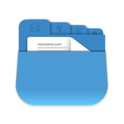
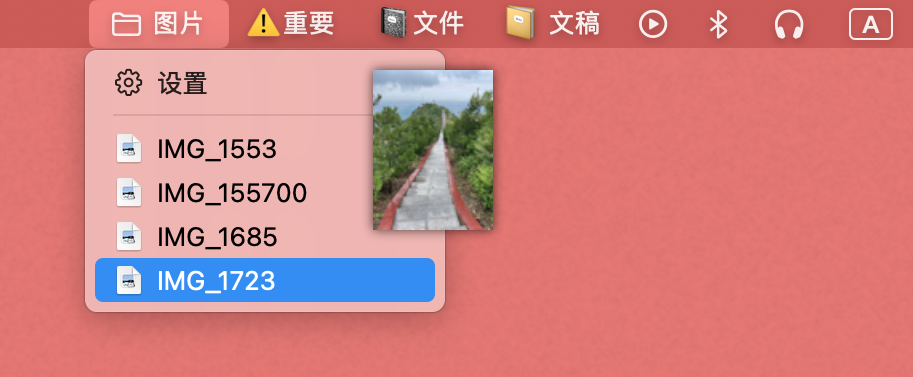
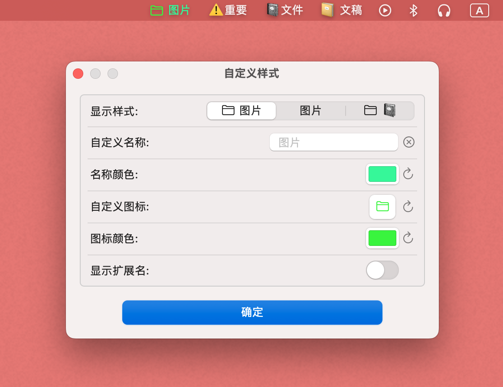

Folder Bar

功能介绍
在菜单栏显示文件列表
Show file list in menu bar

可以添加多个文件夹到菜单栏中。
You can add multiple folders to the menu bar.
点击菜单中的文件可以打开。
Click on a file in the menu to open it.
可以拖动菜单中的文件到任意位置。
You can drag the file in the menu to any location.
可以设置每个菜单栏项目中的文件排序方式。
You can set the sorting method of files in each menu bar item.

你可以对菜单栏上的项目自定义样式，如名称、颜色、设置图标，还可以设置只显示文件夹的图标。
You can customize the style of the items on the menu bar, such as name, color, set icon, and set the icon to only show folders.